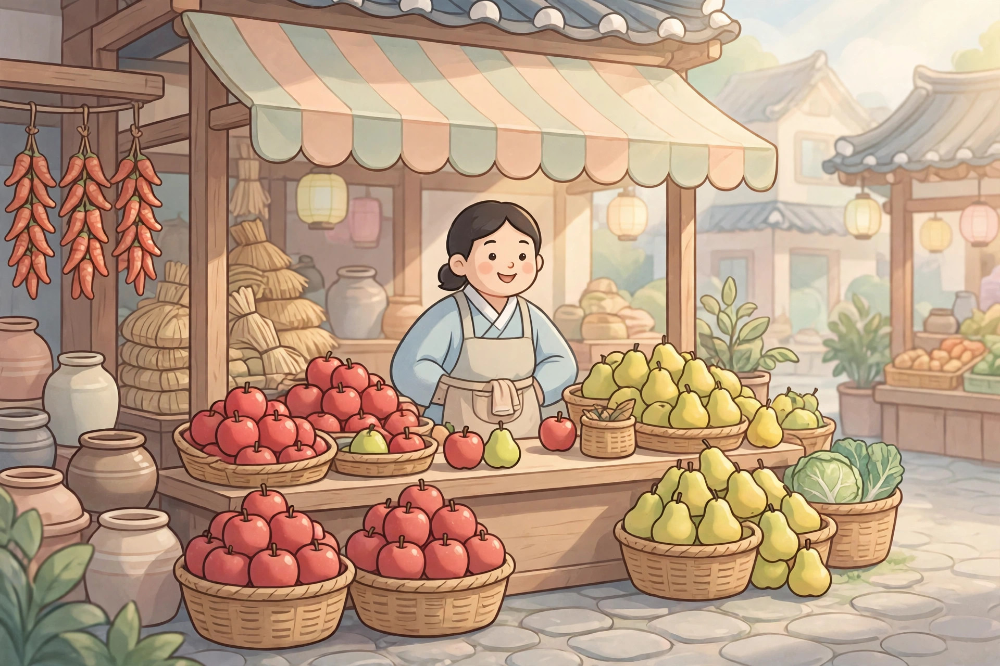

提示：如果頁面變成純文字、沒有圖片和播放按鈕，說明 Safari 閱讀器模式開了，點地址欄的書本圖標退出閱讀器，即可恢復彩色頁面。
去市場買水果
안녕하세요.
去市場買水果，問價錢、買蘋果和梨子，練習數數和「주세요」。

안녕하세요.
사과 얼마예요?
한 개에 천 원이에요.
사과 두 개 주세요.
배도 있어요?
네, 배도 있어요.
배는 얼마예요?
배도 한 개에 천 원이에요.
배 한 개 주세요.
모두 삼천 원이에요.
여기 있어요. 감사합니다.
還沒播放，點上面的大按鈕開始。
慢速女聲朗讀，先聽一遍，再一句一句跟讀。如果大按鈕點了還是沒聲音，請點直接打開音頻，或點下面的備用朗讀。
逐句翻譯
- 你好。
- 蘋果多少錢？
- 一個一千韓元。
- 請給我兩個蘋果。
- 也有梨子嗎？
- 是的，也有梨子。
- 梨子多少錢？
- 梨子也是一個一千韓元。
- 請給我一個梨子。
- 總共三千韓元。
- 給你。謝謝。
文法講解
1. 얼마예요?（多少錢？）
是什麼：問東西的價錢時用的句子。句型結構：名詞 + 얼마예요?。短文例句：사과 얼마예요?（蘋果多少錢？）再舉一例：이 빵 얼마예요?（這個麵包多少錢？）容易錯的地方：問價錢不要只說 얼마?，要說完整的一句 얼마예요?，聽起來才完整、禮貌。
2. 한 개 / 두 개（一個／兩個，數東西的說法）
是什麼：數東西時，前面加固有詞數詞，後面加量詞 -개（個）。句型結構：固有詞數詞 + 개（一個是 한 개，兩個是 두 개，三個是 세 개）。短文例句：사과 두 개 주세요.（請給我兩個蘋果。）再舉一例：커피 세 개 주세요.（請給我三杯咖啡。）容易錯的地方：一個不是 하나 개，要說 한 개；兩個不是 둘 개，要說 두 개；하나、둘 在量詞前面要變成 한、두。
3. 주세요（請給我……）
是什麼：動詞 주다（給）加上禮貌語尾 -세요，買東西時禮貌地請對方把東西給自己。句型結構：名詞 +（數量）+ 주세요。短文例句：사과 두 개 주세요.（請給我兩個蘋果。）再舉一例：물 한 병 주세요.（請給我一瓶水。）容易錯的地方：주세요 就是「請給我」，買東西時直接說東西 + 주세요 就好，不用再加 나에게（給我），聽起來很囉嗦。
常用詞彙
- 사과 蘋果（sa-ga）—— 사과 두 개 주세요.（請給我兩個蘋果。）
- 배 梨子（bae）—— 배도 있어요?（也有梨子嗎？）
- 얼마 多少（價錢）（eol-ma）—— 사과 얼마예요?（蘋果多少錢？）
- 개 個（數東西的量詞）（gae）—— 한 개에 천 원이에요.（一個一千韓元。）
- 천 원 一千韓元（cheon won）—— 한 개에 천 원이에요.（一個一千韓元。）
- 모두 總共、全部（mo-du）—— 모두 삼천 원이에요.（總共三千韓元。）
- 시장 市場（si-jang）—— 시장에서 사과를 사요.（在市場買蘋果。）
- 감사합니다 謝謝（gam-sa-ham-ni-da）—— 여기 있어요. 감사합니다.（給你。謝謝。）
跟讀小提示
數字要讀清楚：한 개、두 개、삼천 원；問句 사과 얼마예요?、배도 있어요? 句尾輕輕揚起；주세요 讀得輕一點、禮貌一點。
留給你的問題
당신은 사과를 좋아해요?
（你喜歡蘋果嗎？）